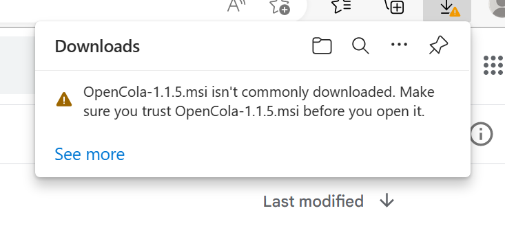
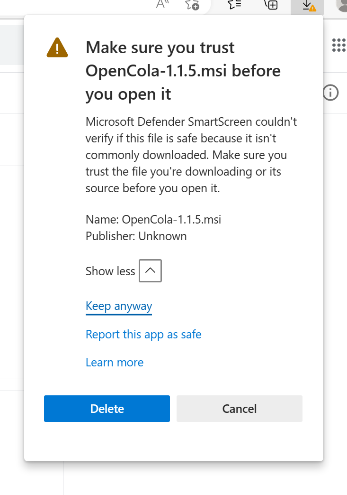
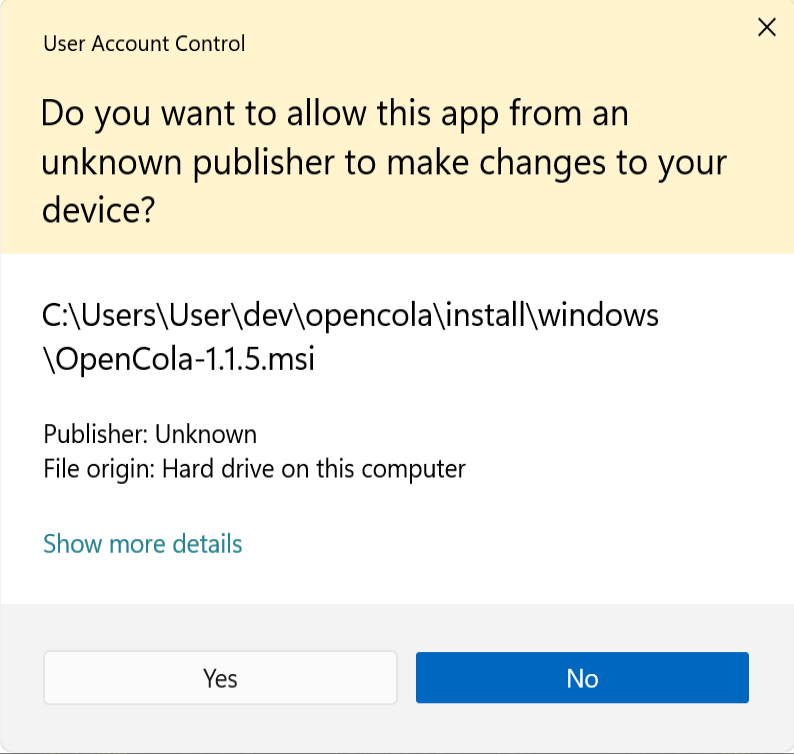
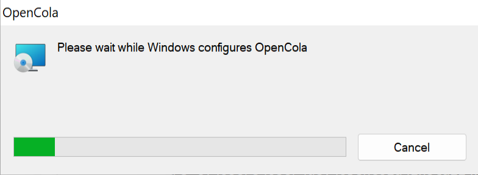
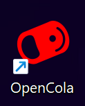

Windows Installation
1. Download the Windows Release (if the download doesn't automatically start, click the link).
Once downloaded, you may get the following warning:
If so, click See more, expand Show more and click Keep anyway:
2. Open the installer.
3. Click Yes at the security prompt:
4. The application will install:
5. Click on the OpenCola Desktop icon to start.
6. A browser window will open. Follow the in app setup instructions.